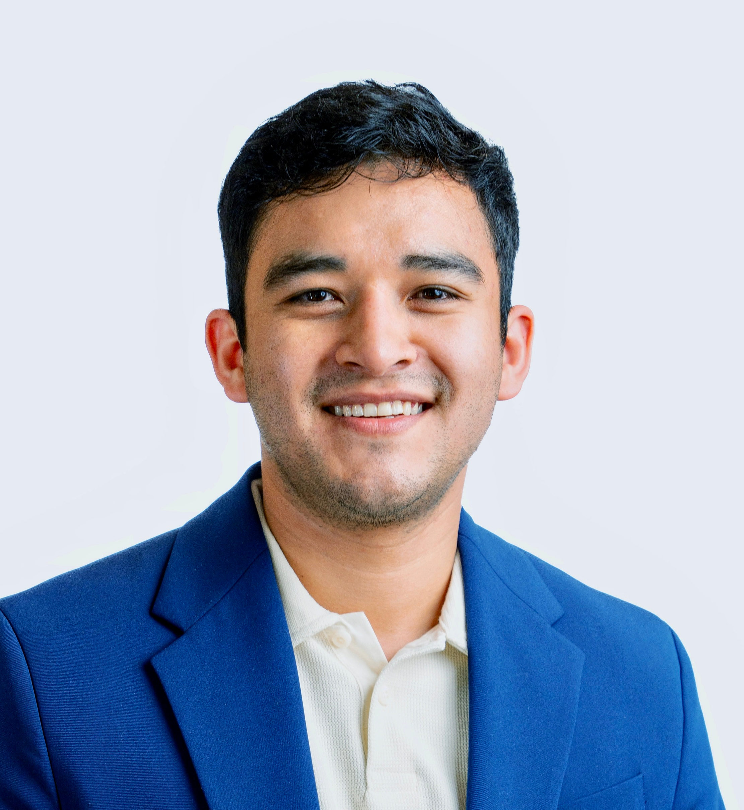

BH
Biometría hemática
Evalúa glóbulos rojos, blancos y plaquetas. Útil para detectar anemia, infecciones y otras alteraciones generales de la sangre.
- Muestra
- Sangre venosa, tubo lila (EDTA)
- Preparación
- No requiere ayuno
Cuidamos cada muestra con el rigor de un laboratorio de especialidad y el trato cercano de tu comunidad. Resultados claros, precios accesibles y una persona responsable a la que puedes conocer.
En construcción · en trámite de autorización sanitaria
Te acompañamos en cada paso, desde la toma de muestra hasta que tienes tus resultados en la mano.
Acude en el horario de toma de muestras. Si tu estudio requiere ayuno, te lo indicamos antes.
Tomamos tu muestra con material estéril y de un solo uso, con calma y cuidado.
Procesamos tu muestra en el laboratorio con controles de calidad en cada corrida.
Consulta tus resultados con tu folio o recógelos directamente en el laboratorio.
Iniciamos con tres estudios básicos, de los más solicitados en consulta general, e iremos ampliando el catálogo conforme el laboratorio crezca.
Evalúa glóbulos rojos, blancos y plaquetas. Útil para detectar anemia, infecciones y otras alteraciones generales de la sangre.
Glucosa, ácido úrico, colesterol total, creatinina, nitrógeno ureico y triglicéridos en suero. Para el seguimiento de diabetes, función renal, colesterol y triglicéridos.
Análisis físico, químico y microscópico de la orina, de apoyo en el diagnóstico de infecciones urinarias y otras condiciones renales.
¿Necesitas otro estudio? Escríbenos: podemos orientarte o canalizarlo a un laboratorio de referencia.
Toma de muestras en fin de semana, para que no tengas que faltar al trabajo o a la escuela.
San Buenaventura, Coahuila
C.P. 25500. Dirección exacta próximamente, en trámite de autorización sanitaria.
¿Quieres agendar o tienes una duda? Escríbenos y te respondemos personalmente.

Quiero que la ciencia y el diagnóstico clínico de calidad también estén al alcance de San Buenaventura, el municipio donde nací.
Ingresa la contraseña para continuar.